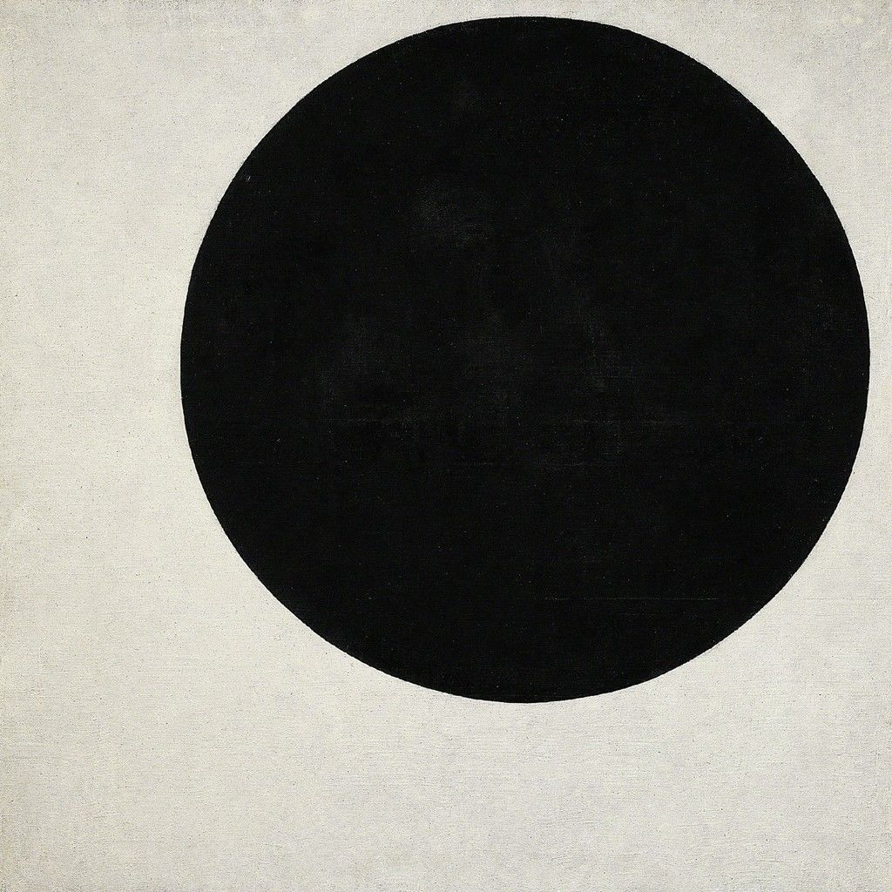

This project is about a traveling ball. As it goes, it encounters another ball, this ball is not traveling however. The ball in bouncing in place, our traveling ball stops and looks at it and decides to attack it. The other ball then attacks it! The black ball wins and then travels off.
